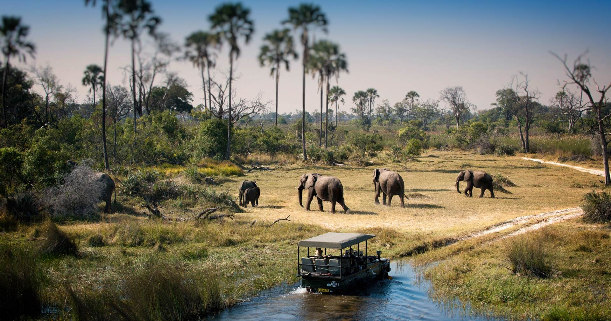

Welcome to Pula Power
Pula Power is a digital platform created to celebrate and promote the rich cultural, historical, and sporting heritage of Botswana. Our goal is to provide both Batswana and international visitors with insightful and engaging information about the people, leaders, and athletes who shape the nation's identity.
Pula Power ke sebaka sa inthanete se bopilweng go keteka le go tlhabolola boswa jo bo humileng jwa ngwao, hisitori le dipapadi mo Botswana. Maikaelelo a rona ke go fa Batswana le baeti ba ba tswang kwa mafatsheng a sele tshedimosetso e e tlhomameng le e kgatlhang ka batho, bagolo le boraisibe ba ba agang setshaba sa rona.
This website highlights Botswana's most iconic national elements—from our passionate football team, the Zebras, to our inspiring track and field athletes who have brought international acclaim. We also honor the legacy of Botswana's presidents, past and present, whose leadership has steered the country through decades of progress and stability.
Webosaete e e bontsha dilo tse di iketlileng mo setšhabeng sa Botswana—go simolola ka sehlopha sa rona sa kgwele ya dinao, The Zebras, go ya go baraisibe ba rona ba maoto le lebala ba ba tlisitseng tlotla mo lefatsheng lotlhe. Re tlotla gape le seabe sa baporesidente ba Botswana, ba bogologolo le ba ga jaana, ba ba etileng pele setšhaba sa rona ka botsogo le kitso.
Whether you're here to learn about Botswana's achievements, explore its inspiring stories, or simply appreciate its unique spirit, Pula Power welcomes you. Let us take you on a journey through the pride and power of Botswana.
Le fa o le fa o batla go ithuta ka ditalente tsa Botswana, go sekaseka dipale tse di kgatlhang kgotsa go leboga semelo sa yone se se ikgethileng, Pula Power e go amogela ka mofuthu. A re tsamayang mmogo mo loetlong lwa tlotla le maatla a Botswana.
